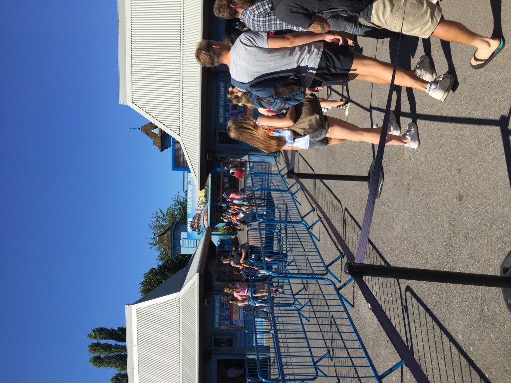
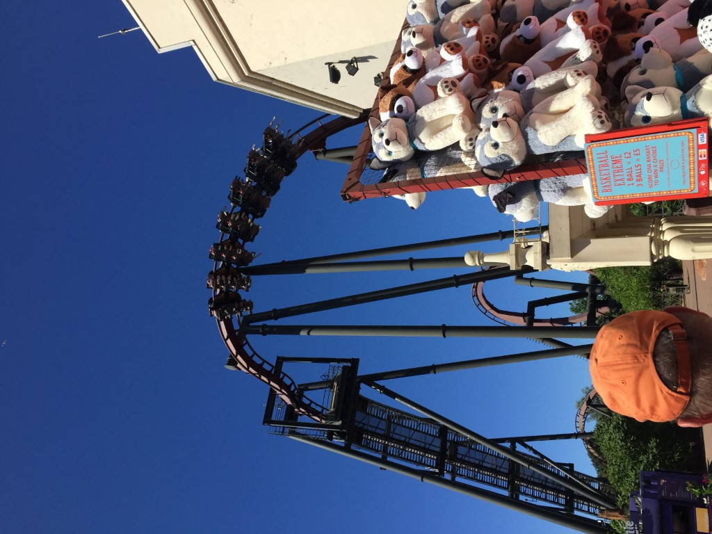
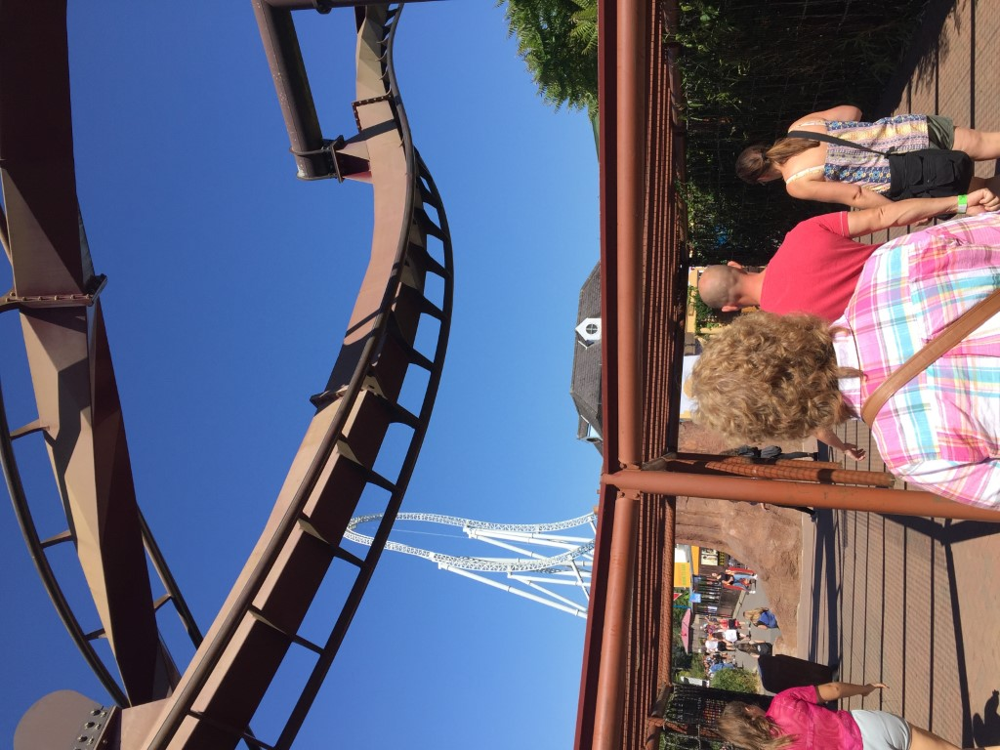
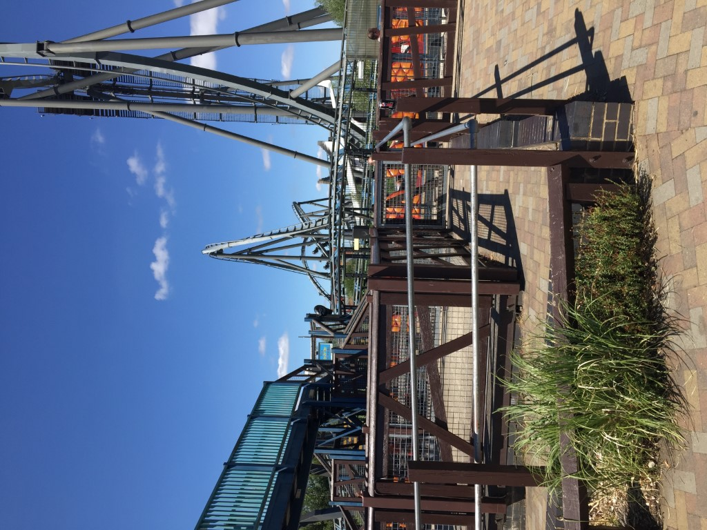
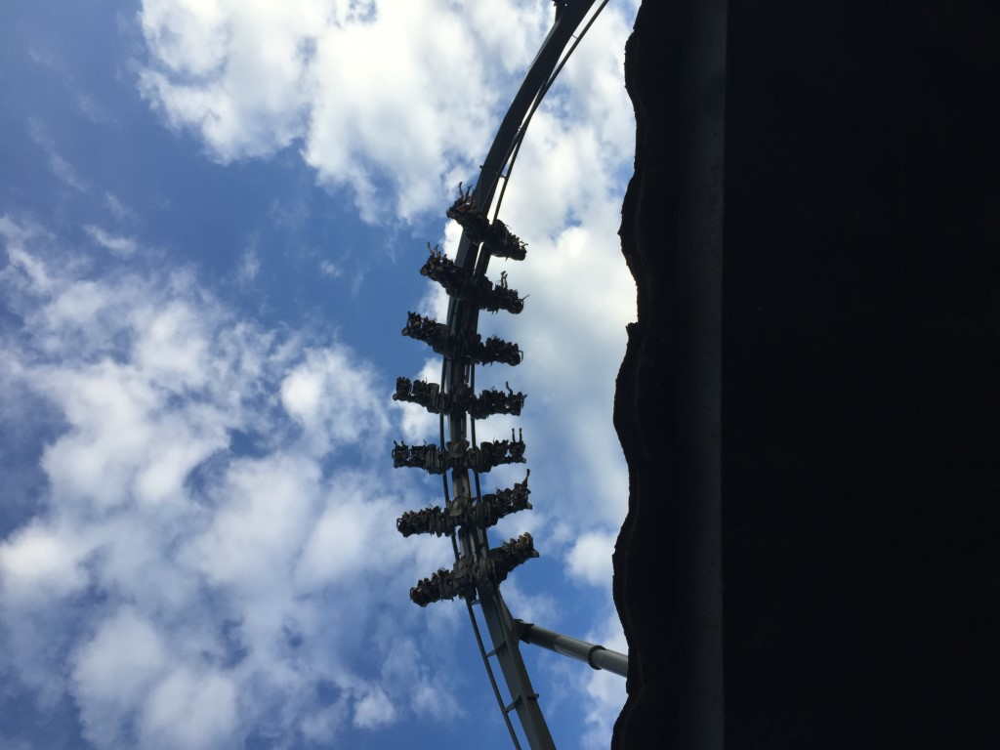
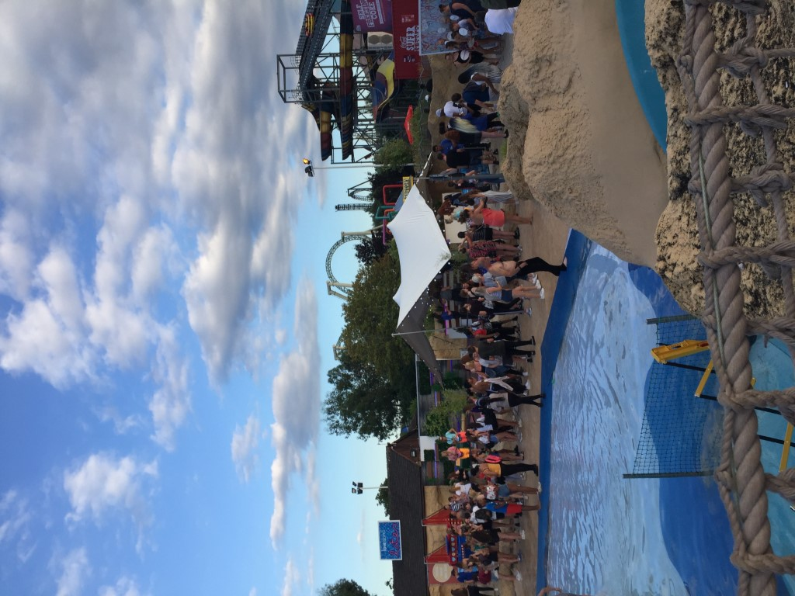

Visiting Thorpe Park
This is the first time I've been to a non-North American park. My experience was neither great nor terrible.
Overview
I know some people might wonder how I chose Thorpe Park as the only place with coasters I visited on a trip to England. The answer is that I didn't pick; my dad did. It's the closest big park to London, and even at that it took 2 hours to travel via the Tube, a train, and a shuttle bus to get there. We arrived about an hour after opening and left at 7PM. One thing that is different than U.S. parks: we went through security first, and then scanned our tickets to get at a separate location to enter. This system seemed less efficient, but it could've just been the crowds. I was very disappointed that Stealth did not operate (employees told us that engineers were working on it) the entire day, especially since Thorpe Park is on the smaller side coaster-wise to begin with. My family decided to buy 2 Fastrack passes (good for 5 uses on their thrill coasters) in advance, so my ride totals for the day were 2 on Nemesis Inferno, 2 on The Swarm, and one on Saw the Ride, Flying Fish, Walking Dead the Ride, and Colossus. I wasn't a huge fan of the park's horror theme on most rides. Several areas needed to be repainted or otherwise spruced up.
Coasters
Flying Fish was a regular kiddie coaster. I thought Nemesis Inferno was a good ride. It was smooth, forceful, and started with a bang, but it was short and not as good as the other B&M inverts I've ridden.
Saw the Ride had extensive theming, an excellent pre-lift dark section with an awesome in-line twist, and a forceful beyond-vertical drop. However, this coaster had lots of unexpected head banging that took away from the ride.
The Swarm was my first wing coaster and overall exceeded my expectations. It's about as smooth as can be, and I loved the vest restraints. I'm not being sarcastic either; I'm more than willing to put up with a restraint that is a little snug if it guarantees no head/neck banging. Well done B&M. I loved the dive drop, but felt gypped by the short length and inclined loop, which didn't feel like a true inversion. I started seeing stars on the in-line twist. For whatever reason it made me really woozy. I rode this both times in the back row on the right. It seemed like for most guests, The Swarm was their favorite ride. I can see why.
Colossus did not open until 5:30PM or so. Earlier in the day, I was about to have a breakdown for traveling across the world to only ride 3 of the 5 big coasters at Thorpe Park. When I got the chance to ride this Intamin 10-inversion beast, I was expecting to get a Time Warp-level beating from Colossus. It wasn't even close to being what I would call really rough. I rode in the middle of the train, and was able to overlook the bumpiness of this ride. Colossus's best part was the quadruple heartline roll. This element was even more fun than it looked in photos and took this ride from good to awesome for me!
All 4 of the aforementioned thrill coasters make my top 50 coasters list, but none are good enough for my top 20. However, I'm fairly certain that Stealth would've been my favorite coaster at Thorpe Park because of my liking of Top Thrill Dragster and Storm Runner. I don't think I'll make a special trip back here for Stealth though; it would take a few more coasters--and as much as I hate to say it, ones without inversions are what this place needs--to grab my attention for a repeat visit.
Now for one of my my worst coaster experiences on Walking Dead the Ride: I had no problem with the ride itself. Afterwards we had to roam through an area filled with live actors posing as zombies. I realize that some people love haunted houses, scare zones, and the like. I'm not one of those people. From the exit of the coaster until we "escaped" the building, my adrenaline was pumping and I was uncomfortable in the dark. We were warned ahead of time about the live actors, but had I known what the full experience entailed, I probably would've skipped the credit in favor of a re-ride on another coaster.
Other Rides
Thorpe Park has a Shoot the Chute, river rapids ride, a waterpark, and typical flat rides. My parents rode Derren Brown's Ghost Train, which they thought was cheesy, but I know some people love it. I only rode coasters the day of my visit.
Food & Merchandise
My family had lunch at Fin's Bar and Grill. The service was a little slow, but the food was tasty and it was nice to eat inside. We also got ice cream from Nitrogenie, and I thought it was OK. Several food and merchandise shops were closed on the day of our visit and I was surprised given that it was a busy day in August. Normally I like to get a t-shirt from amusement parks, but I couldn't find one I liked so I settled for a mug and some magnets.
Cost
We purchased admission and Fast Track tickets online, but after our credit card converted from pounds to USD, it's hard to say if we saved any money. The admission tickets were around $50 each, and the Fast Track passes were another $60 each. I don't have a comparison for other UK parks, but these prices seemed high. Especially for the Fast Tracks since Stealth was closed and they were only good for 5 total uses. It was nice to skip the lines though; up until 6PM there seemed to be at least an hour wait time for coasters. Also, the public transportation to Thorpe Park was not free.
Photos
These photos were taken by me. Please credit this website if used.
     